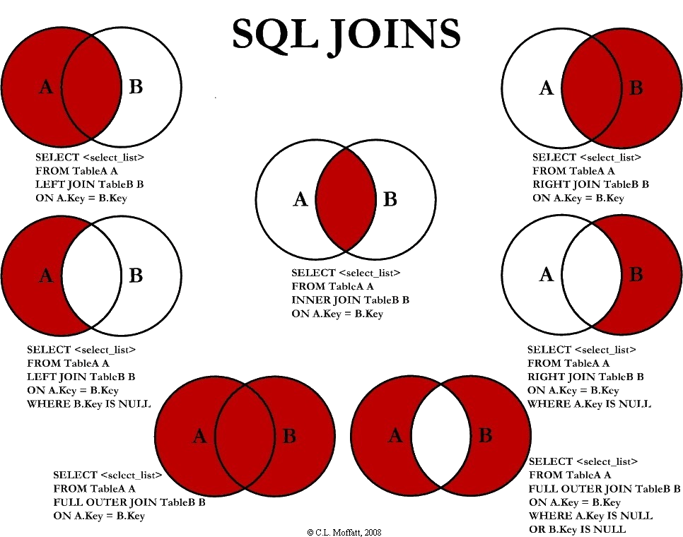

There are a variety of sub-languages within SQL. They are organized into the following categories outlined below.
| Category | Common Commands |
|---|---|
| Data Control Language (DCL) |
|
| Data Definition Language (DDL) |
|
| Data Manipulation Language (DML) |
|
| Transaction Control Language (TCL) |
|
| Data Query Language (DQL) |
|
There are also several types of joins we can perform on our tables. They are shown as such below.
